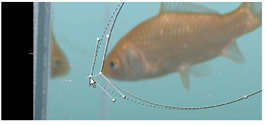

在这个例子中，我们将回到我们的第一个键控例子，应用垃圾哑光并清理水族馆图像。
| 1。 | 从第一个示例返回到节点树，并将查看器连接到 Primatte1 节点。将时间滑块拖动到帧 50 . |
| 2. | 单击节点图上的空白点以取消选择所有节点。然后，右击并选择 绘制> RotoPaint . |
| 3. | 在这一点上，你不需要连接 RotoPaint1 任何节点，但其控制面板必须打开，第一个选项卡, RotoPaint ,应该是活跃的。 |
| 4. |
在观众内部，你会看到金鱼的图像。单击
贝塞尔
工具
|

提示: 只要 RotoPaint1 控制面板打开，您就可以查看和编辑 roto 形状。你可以按 Q 如果需要，在查看器上切换显示覆盖。在任意一点上单击鼠标右键，选择旋转形状的选项。
因为这是一个垃圾掩模，我们想编辑形状来从玻璃水族馆中移除元素。
| 5. | 拖动点并调整切线 (每个点上的控制柄) 以细化旋转形状。 |
现在我们需要动画垃圾遮罩来跟随鱼的运动。
| 6. | 在浏览器顶部的 RotoPaint 工具设置面板中, 自动密钥 选项应该是活动的。如果没有，请单击此选项的框。 |

| 7. | 将时间滑块移动到帧 1 然后单击 变换 RotoPaint 控制面板中的选项卡。然后在 “描边/形状” 列表中选择整个 Bezier 形状 (位于控制面板底部)，或者使用 选择 所有 工具。出现一个变换千斤顶。 |

| 8。 | 拖动变换插孔的中心点，并将其移动到金鱼的当前位置。 |

| 9. | 转到时间线的结尾，到帧 60 。再次拖动形状以调整金鱼的运动。 |
如果你的 Bezier 形状类似于上面显示的形状，那么你可能不需要超过 1 、 50 和 60 帧的三个关键帧。
然而，你可能想浏览时间表并做出调整。
| 10. | 磨砂到框架 60 在时间线上，你会看到罗托有点接近我们想从水族馆玻璃上移走的拐角线。 |
| 11。 | 单击查看器中的空白处以取消选择所有点。然后，按 Ctrl / Cmd 点击金鱼鼻子附近的点，暂时断开点的切线手柄。 |
| 12. | 调整手柄以在鱼的鼻子处创建一个峰值。 |
现在，为了更好的衡量，让我们为这个特定的点创建一个羽状边缘。
| 13。 | 选定点后，将羽毛手柄从鱼处拖动，以在此帧上为该点创建羽毛边缘。 |

所以你画了旋转形状并制作了动画。让我们把它连接到节点树来掩盖 “垃圾”。
| 14. | 拖动 Bg 连接器关闭 Primatte1 节点将其从 Reformat2 节点。 |
| 15。 | 选择 合并> 合并 从右击菜单中。连接 Primatte1 到 一个 Over 节点上的输入。连接 Reformat2 到 B 输入。 |

| 16。 | 连接 RotoPaint1 节点到 over 节点上的屏蔽连接器。这有效地删除了图像中的水族馆反射。 |

你可能想浏览时间线，看看是否有需要调整旋转形状的地方。
如果你想更进一步，你现在可以将金鱼添加到第二个例子中的复合材料中。
| 17. | 选择并拖动 合并 (结束) 节点和 RotoPaint1 用于 IBK 示例的节点树下面的节点。 |
| 18. | 拖动 观众 节点，以及，并保持它连接到 合并 (结束) 节点。 |
| 19。 | 拖动 B 连接器从 Reformat2 节点，并将其连接到 IBK 节点树中的 over 节点。 |

观众显示结果。当然，你可能想添加一个 变换 第一个节点之后的节点 合并 (结束) 节点，以确定金鱼的大小和位置。否则，这个项目就完成了。

|
|